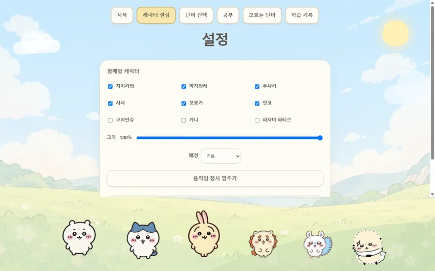

会計資格の取得
韓国の財経管理士、電算会計1級、電算税務2級を取得しました。資格・語学の一覧
会計税務学専攻
日本語日本文学を複数専攻
会計税務学と日本語日本文学を学んでいるキム・サンヒョクです。
財務管理の試験対策に、要点ノートと問題集を作りました。学外では母の不動産仲介の仕事を手伝い、香南（ヒャンナム）の物件検索サイトを作りました。
韓国の財経管理士、電算会計1級、電算税務2級を取得しました。資格・語学の一覧
年金の初回受取日が今日の場合と、1年後の場合。現在価値の計算はどう変わるでしょうか。授業で迷ったこうした問いをノートにまとめました。問題集では、もう一度解きたい問題に星を付けておけます。
どちらの学習サイトも、閲覧にはClaudeへのログインが必要です。
授業で習う仕訳が帳簿に反映されるまでをたどりたくて、架空の卸売会社「ハンビット流通」の取引を題材に、伝票の確認と承認を体験できる実習を作りました。
AIアプリがMCPを通じて取引と証憑を取得し、会計エンジンが仕訳案を作成します。売上の記録時には、出庫数量に単位原価を掛けて売上原価も計算します。
借方・貸方と証憑を照合し、担当者が伝票を承認します。元帳に転記できるのは、承認時の版と内容が一致する伝票です。
ハンビット流通の制作記を読む
母が働く仲介事務所で香南の物件を探せるよう、検索画面を作りました。実際に使った母の要望を聞き、画面を改良しました。

事務所のドメインをCloudflare Workersに接続しました。利用者が「チョンセ」と「マンション」を選ぶと、その条件がURLに入ります。Astroが条件を読み取り、Supabaseから公開中の物件だけを取得して表示します。
同じURLを開き直すと、その時点で公開中の物件が表示されます。チョンセと月払い賃貸では、金額を指定すると保証金で絞り込みます。
チョンセのマンションを探す日本語能力試験N2に合格しました。勉強を続けるうちに、一度間違えた単語だけをもう一度解きたいと思うようになりました。わからない単語に印を付け、前回の続きから学べる単語帳を作りました。

Slackで各エージェントが互いの提案を検討します。合意事項をそれぞれの作業記録に反映し、ひとつの報告にまとめる運用にしました。
似た名前の取引先を見つけるツールもこの方法で検討しました。ツールで表記の誤りを拾い、同じ取引先かどうかは候補一覧を見て人が判断します。
毎週月曜日 08:00
会計と日本語を学ぶ自分に合う募集を探すため、毎週月曜の朝に韓国内の有給インターンを検索しています。対象は会計・財務職と、日本語を使う職種です。勤務地・応募条件・締切を同じ順序で並べて比較します。
会計税務学と日本語日本文学を専攻しています。会計を学ぶ中で、取引の証憑と伝票を扱うツールを作りました。母の不動産仲介事務所では、物件管理と相談記録の作成を自動化しています。
日本語日本文学科を複数専攻
通算GPA 4.3/4.5 （2026年10月時点）
生鮮食品売場で商品の品出しと在庫管理を担当しました。
母の仲介事務所で使う物件検索サイトと相談記録の仕組みを作りました。11月9日には香南の集合住宅3団地で物件広告291件を調べ、新着広告と価格の変動をPDFとExcelにまとめました。
架空の卸売会社の取引証憑をMCP経由で取得し、伝票案を確認・承認して元帳に転記する仕訳実習を作りました。
架空の代理店50社の一覧と精算データ240件を分析しました。関係のある取引先3社の月間支払額を合算すると、6か月すべてで担当部門の決裁上限200万ウォンを超えました。この合算ルールを審査に組み込み、支払日の資金が足りない場合には調達計画を立てられるようにしました。
財務管理の問題を分野別に解き直せるようにしました。日本語の単語帳では、級別の学習と、わからなかった単語の復習ができます。
複数のAIエージェントが同じ提案を検討して反例を挙げるように役割を割り振り、合意した内容を共同作業記録に残しました。
研究開発費を資産として認識できるかといった会計上の論点について、4つのAIの判断根拠と反論を読み比べられる討論ツールを作りました。
担当箇所の日本語原文と韓国語訳を対照できる形にまとめ、初訳をどう直したか、その理由を発表資料に記しました。
ソウル・明洞で日本人観光客3人に日本語でインタビューし、質問ごとに回答を整理して報告書にまとめました。
部員から募った貿易、株式、財務管理に関する提案を共通の関心ごとにまとめ、部の活動計画を立てました。